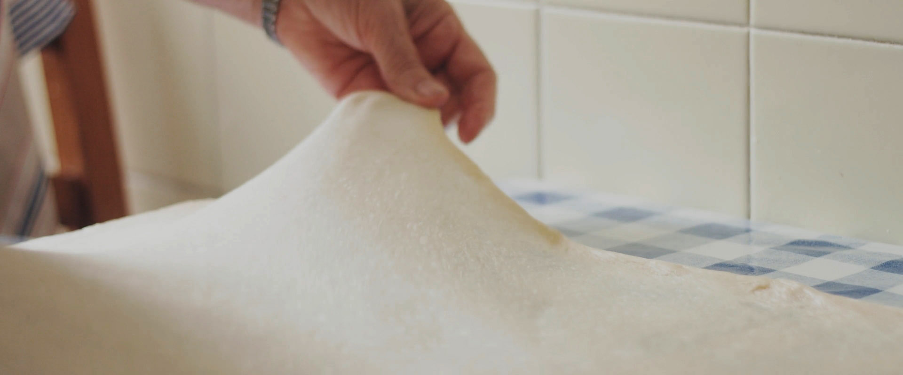

Ensaimada: Settings
Com de grossa la vols? Sa normal és més o menys com un vinil i sa grossa són uns 15 cm extra de diàmetre.
Ous: com són de grossos?
Quin temps fa? (Menys de 21 ºC ho consideram fred)
Que necessites?
| # | Ingredients | Quantitat | Ratio |
|---|---|---|---|
| 1 | Sucre | 150 g | 0,5 Tassó |
| 2 | Ous | 2 | - |
| 3 | Farina de força | 500 g | 2,5 Tassons |
| 4 | Aigua | 160 ml | 0,5 Tassó |
| 6 | Llevadura fresca | 25 g | - |
| 7 | Oli de girasol | Per untar ses mans | - |
| 8 | Saïm | A voler | - |
| 9 | Sucre en pols | A voler | - |
Preparació
- Temps de preparació: ~ 4h
- Temps de forn: 10 - 15 min
- Eines: Taula grossa, rodillo, bol gros, turmix, colador, forn, llauna rodona, paper de forn.
PAS 1:
Descongelar el llevat fresc del tot, després desfer-lo en un bol amb els ML d'aigua tèbia que hem preparat. Afegir OUS. Mesclar amb el túrmix fins que faci espuma.
PAS 2:
Lentament, anar afegint farina amb una mà, mentre l'altra va mesclant. Quan la pasta tingui una mica de consistència, abans d'abocar tota la farina, unta't la mà amb oli de gira-sol, les vegades que faci falta, perquè no s'aferri tant la pasta.


PAS 3:
Acabar d'abocar la farina i pastar fins que tingui consistència, però sense que quedi molt ferma. Si afegeixes massa farina, banya't les mans amb aigua i pasta, així s'afegeix humitat a la pasta. Repeteix fins que estigui bé.
PAS 4:
Tapa-la amb un pedaç humit i deixa-la al forn (apagat) fins que s'hagi duplicat en mida. Si estas en un entorn càlid i humit, amb tapar-la és suficient.

PAS 5:
Quan la pasta hagi tovat, pastar-la de nou. Repeteix el PAS 4 i 5 unes quantes vegades, depenent del temps que tinguis. Mínim tovar 2 vegades.
PAS 6:
Unta tota la taula amb oli de gira-sol. Divideix la pasta en dues meitats. Amb un rodillo, estira bé la primera meitat de la pasta fins que estigui ben fina, creant un rectangle el més regular possible. Després, estira manualment la tela de la pasta perquè sigui tan fina com sigui possible. Si la pasta ha quedat perfecta, hauries d'aconseguir que es transparenti una mica. Si es forada, no passa res. En cas que es foradi molt, no estirar més. La pasta ideal és: Rectangular, molt fina (1-2 mm), sense forats, una mica transparent i flexible. Normalment, no és possible que sigui perfecta, però acostar-s'hi el màxim és clau perquè surti bona.

PAS 7:
Untar la pasta estirada amb saïm. A gust de cadascú, no ha d'estar totalment coberta. En general amb una pinzellada generosa de saïm cada 3-5 cm, és suficient. Això cadascú ha de trobar el seu punt.
PAS 8:
Enrotllar la pasta. Començant pel costat llarg més "perjudicat" enrotllarem el rectangle de pasta delicadament fent un xurro allargat. Col·loquem aquest xurro al centre de la llauna amb paper de forn, en forma d'espiral. Tingues en compte que encara falta la meitat de l'ensaïmada, que es fa en dues parts.

PAS 9:
Agafa la segona meitat de la pasta i repeteix els passos 6, 7 i 8.
PAS 10:
Un cop està l'espiral completa, amb un bon marge al voltant del xurro, esquitxa lleugerament l'ensaïmada amb aigua, com si la bategessis. Col·loca-la al forn apagat a tovar.
PAS 11:
Deixa que tovi fins que el xurro no tingui forats dins l'espiral i ompli la llauna.

PAS 12:
Retira l'ensaïmada del forn. Engega el forn a 200 °C de dalt i de baix, sense ventilador. Quan estigui calent del tot, baixa a 180 °C i posa l'ensaïmada a baix de tot. Enforna 10-12 minuts. Si és grossa i el forn és fluix, pots deixar màxim fins a 15 minuts. Els últims 2-3 minuts pots posar només a baix, si t'agrada la base torrada. Vigila constantment el color de dalt que no es cremi. Passats els 10 minuts, vigila també a baix que no estigui massa crua o cremada.

PAS 13:
Un cop estigui del tot cuita, treu-la i deixa que reposi en un lloc ben ventilat. Abans de servir, cobreix-la completament amb sucre en pols.